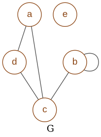
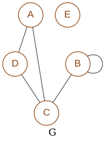
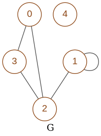
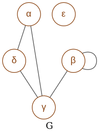

graphmatrix¶
-
class
graphm.graphmatrix.GraphM(**d)¶ Bases:
object- Manage graph with matrix:
Data with internal representation in matrix
Representation of graph with the export capacity in dot format
- Variables
node_style='str' (str) –
default style to generate nodes
options: ‘str’,’int’
layout (dict) –
default attributes for graph layout, see
pygraphviz.Agraph- prog
(str) type of programmed layout
options: ‘neato’,’dot’,’twopi’,’circo’,’fdp’,’nop’
graph_attr (dict) –
default attributes for graph, see
pygraphviz.Agraph- directed
(bool) directed graph or not
- label
(str) label printed in the graph
- rankdir
(str) orientation for dot graph
- ranksep
(str) distance between nodes
- strict
(bool) mode for dot graph
node_attr (dict) –
default attributes for nodes, see
pygraphviz.Agraph- color
(str) font color of nodes
- fontcolor
(str) font color of nodes
- fontname
(str) font name of nodes
- shape
(str) shape of nodes
edge_attr (dict) –
default attributes for edges, see
pygraphviz.Agraph- color
(str) font color of edges
- fontcolor
(str) font color of edges
- fontname
(str) font name of edges
Caution
Instance variables
- Variables
Graph for the majority of examples
-
node_style= 'str'¶
-
graph_attr= {'directed': True, 'label': 'G', 'rankdir': 'TB', 'ranksep': '0.5', 'strict': False}¶
-
node_attr= {'color': 'chocolate4', 'fontcolor': 'chocolate4', 'fontname': 'Arial', 'shape': 'circle'}¶
-
edge_attr= {'color': 'gray30', 'fontcolor': 'gray30', 'fontname': 'Arial'}¶
-
__init__(**d) → Graph¶ Set a instance of v
boolean get a boolean matrix
binary get a binary matrixM and dimN
edges get list of edges and of optionally nodes
nodes optional, get list of nodes
- Parameters
**d (dict) –
options to specify the type of matrix
- boolean
(list[int]) matrix in [str, …] or [[int,…], …] or (str, …) or ((int,…), …)
- binary
matrixM in [int, …] and dimN: (tuple) int
- edges
(tuple/list) list of edges in tuple format (nodeIn, nodeOut)
- nodes
(tuple/list) optional list of nodes
for nodes
- nodes
(iter(str)) names of nodes
- node_style=’str’
(str) type of nodes name generation ‘str’ or ‘int’
for viz
- layout
(dict) default attributes for graph layout, see
Graph.layout- graph_attr
(dict) default attributes for graph, see
Graph.graph_attr- node_attr
(dict) default attributes for nodes, see
Graph.node_attr- edge_attr
(dict) default attributes for edges, see
Graph.edge_attr
- Returns
the graph
- Return type
Graph
>>> g = GraphM() >>> print(g) dim 0 matrix nodes
>>> g = GraphM(boolean=['01001', '00100', '01010', '00001', '01010'], node_style='int') >>> g.draw("docs/src/files/graph1.png")
>>> g = GraphM(boolean=['00010', '01100', '10000', '10100', '00000'], nodes='a,b,c,d,e,f,g,h,i,j', node_style='int') >>> g.draw("docs/src/files/graph2.png") >>> print(g) dim 5 matrix [[0, 0, 0, 1, 0], [0, 1, 1, 0, 0], [1, 0, 0, 0, 0], [1, 0, 1, 0, 0], [0, 0, 0, 0, 0]] nodes a b c d e
-
layout= {'prog': 'dot'}¶
-
__repr__() → str¶ Return the dimension and the length of nodes if exists
- Returns
the dimension and the length of nodes
>>> g = GraphM() >>> repr(g) 'dim=0 nodes=0'
>>> g = GraphM(boolean=['00010', '01100', '10000', '10100', '00000'], nodes='aa,bbb,c,d,e,f,g,h,i,j', node_style='int') >>> repr(g) 'dim=5 nodes=5'
-
__str__() → str¶ Return the dimension, nodes and matrix if exists
- Returns
the dimension, matrix and the length of nodes
>>> g = GraphM() >>> print(g) dim 0 matrix nodes
>>> g = GraphM(boolean=['00010', '01100', '10000', '10100', '00000'], nodes='a,b,c,d,e,f,g,h,i,j', node_style='int') >>> print(g) dim 5 matrix [[0, 0, 0, 1, 0], [0, 1, 1, 0, 0], [1, 0, 0, 0, 0], [1, 0, 1, 0, 0], [0, 0, 0, 0, 0]] nodes a b c d e
-
update_viz_attrs(**d) → None¶ Add viz attributes to drawing
- Parameters
**d (dict) –
options to specify arguments to
pygraphviz.AGraphSee
Graph.layout,Graph.graph_attr,Graph.node_attr,Graph.edge_attrinGraph
>>> g = GraphM(boolean=['00010', '01100', '10000', '10100', '00000']) >>> list(g.viz.graph_attr.items()) [('directed', 'True'), ('label', 'G'), ('rankdir', 'TB'), ('ranksep', '0.5'), ('strict', 'False')]
>>> g.update_viz_attrs(graph_attr={'label':'new', 'margin':0.2}) >>> list(g.viz.graph_attr.items()) [('directed', 'True'), ('label', 'new'), ('margin', '0.2'), ('rankdir', 'TB'), ('ranksep', '0.5'), ('strict', 'False')]
-
draw(path: str = 'files/tmp.png', ext: str = 'png', **d) → None¶ - Draw matrix graph to a file with the layout and fews options for test_graphviz:
file: str /
layout: str / circo, dot, fdp, neato, osage, patchwork, twopi
- Parameters
path=files/tmp.png (str) – path to write the file
ext='png' (str) –
format of the file
- options:
circo, dot, fdp, neato, osage, patchwork, twopi
- full options regadless implementaion :
‘canon’, ‘cmap’, ‘cmapx’, ‘cmapx_np’, ‘dia’, ‘dot’, ‘fig’, ‘gd’, ‘gd2’, ‘gif’, ‘hpgl’, ‘imap’, ‘imap_np’, ‘ismap’, ‘jpe’, ‘jpeg’, ‘jpg’, ‘mif’, ‘mp’, ‘pcl’, ‘pdf’, ‘pic’, ‘plain’, ‘plain-ext’, ‘png’, ‘ps’, ‘ps2’, ‘svg’, ‘svgz’, ‘vml’, ‘vmlz’, ‘vrml’, ‘vtx’, ‘wbmp’, ‘xdot’, ‘xlib’
**d (dict) –
options to specify the type of matrix
for viz
- label=’G’
(str) label for the graph
- shape=’circle’
(str) shape of the node for the graph
- nodeFont=’Arial’
(str) font name for nodes
- nodeColor=’chocolate4’
(str) font color for nodes
- edgeColor=’gray30’
(str) font color for edges
for nodes
- nodes
(iter(str)) names of nodes
- node_style=’str’
(str) type of nodes name generation ‘str’ or ‘int’
example 1
>>> g = GraphM(nodes=['A','B','C','D','E'], edges=('AD','DA','DC','CA','BC','BB')) >>> g.draw("docs/src/files/graph3.png")
.list(self.viz.graph_attr.items())
example 2
>>> g = GraphM(boolean=['00010', '01100', '10000', '10100', '00000']) >>> g.draw("docs/src/files/graph3.png")
.
example 3
>>> g = GraphM(boolean=['00010', '01100', '10000', '10100', '00000'], node_style='int') >>> g.draw("docs/src/files/graph4.png")
.
example 4
>>> g = GraphM(boolean=['00010', '01100', '10000', '10100', '00000'], nodes=['α','β','γ','δ','ε','ζ']) >>> g.draw("docs/src/files/graph5.png")
.
-
init_viz_attrs() → None¶ Set default viz attributes to drawing with default class attributes for viz
See
Graph.layout,Graph.graph_attr,Graph.node_attr,Graph.edge_attrinGraph>>> g = GraphM(boolean=['00010', '01100', '10000', '10100', '00000']) >>> list(g.viz.graph_attr.items()) [('directed', 'True'), ('label', 'G'), ('rankdir', 'TB'), ('ranksep', '0.5'), ('strict', 'False')]
>>> g.viz.graph_attr.pop('label') 'G' >>> list(g.viz.graph_attr.items()) [('directed', 'True'), ('label', ''), ('rankdir', 'TB'), ('ranksep', '0.5'), ('strict', 'False')]
>>> g.init_viz_attrs() >>> list(g.viz.graph_attr.items()) [('directed', 'True'), ('label', 'G'), ('rankdir', 'TB'), ('ranksep', '0.5'), ('strict', 'False')]
-
int2str(line: int) → str¶ Return string value of converted binary, string length is adjusted by to dim
- Parameters
line (int) – line of boolean in integer representation
- Returns
string of booleans
- Return type
str
>>> g = GraphM(binary=[1, 3, 8, 0]) >>> g.int2str(7) '0111'
-
generate_nodes(node_style: str = 'str') → list¶ Return nodes names generating with the type given
- param str node_style’=str’
type of nodes name generation ‘str’ or ‘int’
- Returns
nodes names
- Return type
list
>>> g = GraphM(boolean=['00010', '01100', '10000', '10100', '00000']) >>> g.generate_nodes() ['A', 'B', 'C', 'D', 'E']
>>> g.generate_nodes(node_style='int') ['0', '1', '2', '3', '4']
-
set_matrix_binary(**d) → None¶ Set boolean matrix from binary matrix and nodes if given
Get a binary matrix contains a list of integers
- Parameters
**d (dict) –
containing matrix and optionally nodes
- binary
(list) matrixM in format [int, …]
- nodes
(tuple/list) optional list of nodes
for nodes
- nodes
(iter(str)) names of nodes
- node_style=’str’
(str) type of nodes name generation ‘str’ or ‘int’
>>> g = GraphM() >>> g.set_matrix_binary(binary=[1, 4, 2]) >>> print(g) dim 3 matrix [[0, 0, 1], [1, 0, 0], [0, 1, 0]] nodes A B C
-
set_matrix_boolean(**d) → None¶ Set boolean matrix with int 0/1 from boolean matrix and nodes if given
- Parameters
**d (dict) –
containing matrix and optionally nodes
- binary
(list) matrixM in format [int, …]
- nodes
(tuple/list) optional list of nodes
for nodes
- nodes
(iter(str)) names of nodes
- node_style=’str’
(str) type of nodes name generation ‘str’ or ‘int’
>>> g = GraphM(boolean=['00010', '01100', '10000', '10100', '00000']) >>> print(g) dim 5 matrix [[0, 0, 0, 1, 0], [0, 1, 1, 0, 0], [1, 0, 0, 0, 0], [1, 0, 1, 0, 0], [0, 0, 0, 0, 0]] nodes A B C D E
>>> g = GraphM(boolean=[['0','0','0','1'], ['0','0','1','0'], ['1','0','0','0'], ['1','0','1','0']]) >>> print(g) dim 4 matrix [[0, 0, 0, 1], [0, 0, 1, 0], [1, 0, 0, 0], [1, 0, 1, 0]] nodes A B C D
>>> g = GraphM(boolean=[[0,0,0,1], [0,0,1,0], [0,0,0,1], [1,0,1,1]]) >>> print(g) dim 4 matrix [[0, 0, 0, 1], [0, 0, 1, 0], [0, 0, 0, 1], [1, 0, 1, 1]] nodes A B C D
-
set_matrix_ne(**d) → None¶ Set boolean matrix from nodes or edges
Note
if edges are given without nodes, the nodes are generate from edges automatically
- Parameters
**d (dict) –
containing matrix and optionally nodes
- edges
(iter) edges in format ‘in,out’ or [in, out] or (in, out)
- nodes
(iter) names of nodes in iterable of strings
- node_style=’str’
(str) type of nodes name generation ‘str’ or ‘int’
>>> g = GraphM(nodes=['A','B','C','D','E'], edges=('AD','DA','DC','CA','BC','BB')) >>> print(g) dim 5 matrix [[0, 0, 0, 1, 0], [0, 1, 1, 0, 0], [1, 0, 0, 0, 0], [1, 0, 1, 0, 0], [0, 0, 0, 0, 0]] nodes A B C D E
>>> g = GraphM(edges=('AD','DA','DC','CA','BC','BB')) >>> print(g) dim 4 matrix [[0, 0, 0, 1], [0, 1, 1, 0], [1, 0, 0, 0], [1, 0, 1, 0]] nodes A B C D
>>> g = GraphM(nodes=['A','B','C','D','E']) >>> print(g) dim 5 matrix [[0, 0, 0, 0, 0], [0, 0, 0, 0, 0], [0, 0, 0, 0, 0], [0, 0, 0, 0, 0], [0, 0, 0, 0, 0]] nodes A B C D E
-
set_viz(**d) → None¶ Set instance of
pygraphviz.AGraphwith viz properties- Parameters
**d (dict) –
options to specify arguments to
pygraphviz.AGraph- layout
(dict) default attributes for graph layout, see
Graph.layout- graph_attr
(dict) default attributes for graph, see
Graph.graph_attr- node_attr
(dict) default attributes for nodes, see
Graph.node_attr- edge_attr
(dict) default attributes for edges, see
Graph.edge_attr
-
str() → str¶ Return the dimension, matrix and the length of nodes if exists
- Returns
the dimension, matrix and the length of nodes
>>> g = GraphM() >>> print(g.str()) dim 0 nodes matrix
>>> g = GraphM(boolean=['00010', '01100', '10000', '10100', '00000'], nodes='a,b,c,d,e,f,g,h,i', node_style='int') >>> print(g.str()) dim 5 nodes a b c d e matrix 00010 01100 10000 10100 00000
-
set_viz_edges(nodes: list = []) → None¶ Add edges to viz from arguments edges & nodes
- Parameters
nodes (list) – nodes of graph
>>> g = GraphM(boolean=['00010', '01100', '10000', '10100', '00000']) >>> g.viz.edges() [('A', 'D'), ('B', 'B'), ('B', 'C'), ('C', 'A'), ('D', 'C')]
>>> g.set_viz_edges('a,b,c,d,e,f,g,h,j') >>> g.viz.edges() [('a', 'd'), ('d', 'c'), ('b', 'b'), ('b', 'c'), ('c', 'a')]
-
set_viz_nodes(cut: bool = True, **d) → None¶ - Add nodes to viz from:
dictionary if given in argument
generated by self.generate_nodes()
- param bool cut=False
if True reduce the number of nodes to the dimension of the graph
- param dict **d
options to specify arguments to
pygraphviz.AGraph- nodes
(iter(str)) names of nodes
- node_style=’str’
(str) type of nodes name generation ‘str’ or ‘int’
>>> g = GraphM(boolean=['00010', '01100', '10000', '10100', '00000']) >>> g.viz.nodes() ['A', 'B', 'C', 'D', 'E']
>>> g.set_viz_nodes(nodes='UU,V,X,Y,Z,T') >>> g.viz.nodes() ['UU', 'V', 'X', 'Y', 'Z']
-
convert_edges(edges: iter) → list¶ Convert edges to list of single elements
- Parameters
edges (list) – edges of graph
- Returns
edges in single elements
- Return type
list
-
convert_nodes(nodes: iter) → list¶ Convert edges to list of single elements
- Parameters
edges (list) – edges of graph
- Returns
edges in single elements
- Return type
list
-
str_matrix()¶ Return a representation of matrix in 2 dimensions
- Returns
a representation of matrix in 2 dimensions
- Return type
str
>>> g = GraphM(boolean=['00010', '01100', '10000', '10100', '00000'], nodes=['u','v','w','x','y','z']) >>> print(g.str_matrix()) 00010 01100 10000 10100 00000
-
__module__= 'graphm.graphmatrix'¶
-
__weakref__¶ list of weak references to the object (if defined)
-
str_nodes()¶ Return a representation of nodes to string
- Returns
a representation of nodes
- Return type
str
>>> g = GraphM(boolean=['00010', '01100', '10000', '10100', '00000'], nodes=['α','β','γ','δ','ε','ζ']) >>> g.str_nodes() 'α β γ δ ε'